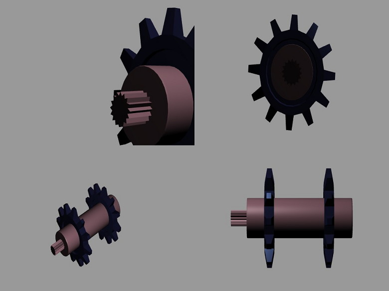

Qt 3D: Multi Viewport QML Example
A QML example that demonstrates rendering a Scenegraph from multiple viewports.

Multi Viewport renders a Scenegraph from the point of view of four virtual cameras into the four quadrants of a window. This is a common configuration for 3D CAD or modelling tools or could be adjusted to help with rendering a rear-view mirror in a car racing game or a CCTV camera display.
For more information, see A Multi Viewport FrameGraph.
Running the Example
To run the example from Qt Creator, open the Welcome mode and select the example from Examples. For more information, visit Building and Running an Example.
Creating Multiple RenderViews
Using the rules defined in Framegraph Rules, we construct five RenderView objects from the FrameGraph:
Viewport { id: mainViewport normalizedRect: Qt.rect(0, 0, 1, 1) ClearBuffers { buffers: ClearBuffers.ColorDepthBuffer clearColor: Qt.rgba(0.6, 0.6, 0.6, 1.0) } Viewport { id: topLeftViewport normalizedRect: Qt.rect(0, 0, 0.5, 0.5) CameraSelector { id: cameraSelectorTopLeftViewport } } Viewport { id: topRightViewport normalizedRect: Qt.rect(0.5, 0, 0.5, 0.5) CameraSelector { id: cameraSelectorTopRightViewport } } Viewport { id: bottomLeftViewport normalizedRect: Qt.rect(0, 0.5, 0.5, 0.5) CameraSelector { id: cameraSelectorBottomLeftViewport } } Viewport { id: bottomRightViewport normalizedRect: Qt.rect(0.5, 0.5, 0.5, 0.5) CameraSelector { id: cameraSelectorBottomRightViewport } } }
The order is important. If the ClearBuffers node were to be the last instead of the first, this would result in a black screen for the simple reason that everything would be cleared right after having been so carefully rendered. For a similar reason, it could not be used as the root of the FrameGraph as that would result in a call to clear the whole screen for each of our viewports.
Although the declaration order of the FrameGraph is important, Qt 3D is able to process each RenderView in parallel as each RenderView is independent of the others for the purposes of generating a set of RenderCommands to be submitted whilst the RenderView's state is in effect.
Qt 3D uses a task-based approach to parallelism which naturally scales up with the number of available cores. The RenderCommands for the RenderViews can be generated in parallel across many cores, and as long as we take care to submit the RenderViews in the correct order on the dedicated OpenGL submission thread, the resulting scene will be rendered correctly.